UPI Kampus Tasikmalaya · Sistem pelaporan kebersihan lokasi kampus
Penjelasan lengkap setiap Data Flow Diagram (Level 0, 1, 2), diagram UML (Use Case, Class,
Sequence), dan diagram proses bisnis (BPMN) dengan bahasa sehari-hari, untuk pembaca yang tidak
berlatar belakang teknik informatika.
Dokumen ini menjelaskan gambar-gambar rancangan (diagram) dari Kato Report, sistem pelaporan kebersihan lokasi di UPI Kampus Tasikmalaya. Diagram adalah cara para perancang sistem menggambarkan “cara kerja” sebuah aplikasi di atas kertas, sama seperti arsitek menggambar denah sebelum membangun rumah.
Setiap diagram di sini dibuat dari sistem yang benar-benar sudah berjalan, bukan sekadar rencana. Nama proses, isi data, urutan langkah, dan nama tabel diambil langsung dari kode program dan basis datanya (versi 29 Oktober 2026).
Semua gambar di dokumen PDF ini berupa gambar vektor. Artinya bila diperbesar (zoom), tulisannya tetap tajam, tidak pecah. Ini berguna terutama untuk DFD Level 1 yang cukup padat.
cleaning_areas). Tabel lama toilets dan
buildings masih ada sebagai data lama untuk keluhan yang dibuat sebelum migrasi 0011
(keluhan menunjuk lokasi); keluhan baru tidak memakainya lagi.Bayangkan seseorang melihat lantai dasar Gedung C becek dan sampah menumpuk. Di dinding ada stiker kode QR. Ia memindainya dengan ponsel, menulis “lantai becek, tempat sampah penuh”, memotret kondisinya, lalu menekan kirim. Ia tidak perlu punya akun. Ia langsung mendapat nomor laporan untuk memantau perkembangannya.
Dalam hitungan detik, sebuah kecerdasan buatan (AI) pembaca teks membaca keluhan itu dan mengubahnya menjadi “tiket kerja” yang rapi: jenis masalahnya (genangan, kebersihan), tingkat kepentingannya, ringkasan singkat, dan saran tindakan untuk petugas.
Seorang petugas kebersihan membuka halaman petugas. Semua keluhan yang masih terbuka sudah tampil tanpa harus memilih apa pun; gedung dan lantai hanya penyaring. Petugas menekan “Saya kerjakan sekarang” dan memilih namanya. Klaim ini bukan kunci: selama keluhan belum selesai, petugas lain boleh mengambil alih, dan perpindahannya tercatat. Setelah membersihkan, petugas memotret hasilnya. Foto itu diperiksa oleh AI pembaca gambar: apakah ini benar lokasi yang dilaporkan, dan apakah sudah bersih? Hanya bila AI menilai bersih, keluhan boleh ditandai selesai. Bila masih kotor atau salah tempat, foto ditolak beserta alasannya. Keluhan yang sudah selesai tidak dapat dibuka kembali.
Selain keluhan, petugas juga punya tugas harian: enam pekerjaan tetap per lokasi (menyapu & mengepel, mengelap kaca, membersihkan toilet, membuang sampah, mengisi galon, merapikan ruangan). Tiap tugas difoto langsung dari kamera dan dikirim bersama posisi GPS ponsel. Waktu foto yang dihitung adalah waktu server, bukan jam ponsel, dan posisi dibandingkan dengan batas kampus. Laporan di luar kampus atau tanpa GPS tetap diterima tetapi ditandai supaya supervisor melihatnya.
Setiap sore pukul 17.00 WIB, sistem otomatis membuat ringkasan harian: satu paragraf yang menyebut lokasi paling bermasalah dan tindakan paling mendesak. Supervisor (pengawas) memantau semuanya dari dashboard: ringkasan dan grafik, daftar keluhan, laporan kebersihan per petugas, serta buku catatan aktivitas yang tidak bisa dihapus. Siapa pun juga bisa mengajukan pertanyaan kepada Kato Bot, asisten AI berbentuk ikon melayang di setiap halaman, misalnya “gedung mana yang paling sering bermasalah bulan ini?”.
/report/<kode lokasi>. Pelapor memindainya untuk melaporkan keluhan, dan petugas
memakai kode lokasi yang sama untuk melihat keluhan di lokasi itu. Stiker lama berbentuk
/lapor/… tetap dialihkan ke alamat baru. Karena itu di diagram, “QR lokasi” muncul sebagai
data pertama yang dikirim pelapor.Dalam diagram, “pihak yang terlibat” disebut aktor (di UML) atau entitas eksternal (di DFD). Keduanya berarti pihak di luar sistem yang memberi atau menerima data. Ada enam pihak:
| Pihak | Jenis | Perannya |
|---|---|---|
| Pelapor (siapa saja) | Manusia | Melaporkan keluhan, melihat papan publik, dan bertanya kepada Kato Bot. Boleh siapa saja, tanpa akun. Akun hanya perlu bila ingin tampil di papan peringkat pelapor teraktif. |
| Petugas Kebersihan | Manusia | Menangani keluhan (klaim, ambil alih, selesai dengan foto bukti) dan mengirim tugas harian. Tidak perlu login: cukup memilih namanya dari daftar yang dibuat supervisor. |
| Supervisor | Manusia | Pengawas (SPV). Satu-satunya yang wajib login. Memantau keluhan, laporan kebersihan, statistik, dan log; mengelola nama petugas dan akun; menghapus keluhan bila perlu; mencetak stiker QR. |
| LLM Teks (DeepSeek) | Layanan AI | “Otak” pembaca teks. Menggolongkan keluhan, membuat ringkasan harian, dan menjawab pertanyaan Kato Bot. |
| LLM Vision (Gemini) | Layanan AI | “Mata” sistem. Menilai foto bukti penyelesaian keluhan: apakah lokasinya benar dan sudah bersih. Tugas harian tidak melewati pemeriksaan ini. |
| Penjadwal (Cron) | Jam otomatis | Semacam alarm yang berbunyi setiap hari pukul 17.00 WIB (10.00 UTC) untuk memicu pembuatan ringkasan harian. |
LLM (Large Language Model) adalah nama teknis untuk jenis AI yang memahami bahasa, seperti ChatGPT. Sistem ini memakai dua LLM dari perusahaan berbeda karena tugasnya berbeda: satu untuk teks, satu untuk gambar. Karena siapa saja boleh melapor, melihat papan publik, dan bertanya kepada Kato Bot, semuanya digambar sebagai satu pihak: Pelapor.
Dokumen ini memuat tiga “keluarga” diagram. Ketiganya menggambarkan sistem yang sama, tetapi dari sudut pandang yang berbeda.
Diagram aliran data. Menjawab pertanyaan: data apa berpindah dari mana ke mana, dan disimpan di mana? Bayangkan peta jalur kurir di kantor pos: siapa yang mengirim paket, meja mana yang mengolahnya, dan rak mana yang menyimpannya.
Kumpulan diagram standar untuk merancang perangkat lunak. Seperti cetak biru bangunan yang punya denah, tampak depan, dan potongan: setiap jenis diagram UML memotret sistem dari sisi berbeda (siapa memakai apa, bentuk datanya, urutan kejadian).
Diagram alur kerja antarpihak dalam bentuk lajur renang (swimlane). Menjawab: siapa mengerjakan langkah apa, dan apa yang terjadi bila hasilnya tidak memenuhi syarat? Cocok untuk dibaca pimpinan dan pengelola yang ingin melihat proses dari awal sampai akhir.
| Diagram | Pertanyaan yang dijawab | Analogi sehari-hari |
|---|---|---|
| DFD Level 0 | Sistem ini berhubungan dengan siapa saja? | Foto satelit sebuah kantor: kelihatan gedungnya dan siapa yang datang-pergi. |
| DFD Level 1 | Pekerjaan besar apa saja di dalam sistem? | Denah lantai: bagian-bagian kantor dan lemari arsipnya. |
| DFD Level 2 | Langkah-langkah rinci setiap pekerjaan? | Prosedur kerja (SOP) di satu meja. |
| UML Use Case | Siapa bisa melakukan apa? | Daftar layanan di papan informasi, beserta siapa yang boleh memakainya. |
| UML Class | Data apa saja yang dicatat, dan bagaimana saling berhubungan? | Contoh formulir-formulir kantor dan hubungan antar-formulir. |
| UML Sequence | Dalam satu kejadian, siapa bicara ke siapa, urutannya bagaimana? | Naskah drama: siapa berkata apa kepada siapa, baris demi baris. |
| BPMN | Siapa mengerjakan langkah apa, dari awal sampai akhir? | Bagan alur kerja di dinding ruang kerja, dibagi per bagian yang bertanggung jawab. |
Semua DFD di dokumen ini memakai notasi Yourdon/DeMarco, salah satu gaya baku yang paling umum diajarkan. Hanya ada lima simbol:
2.0 di Level 1 dipecah
menjadi 2.1, 2.2, dan seterusnya di Level 2.D1–D8
di sekat kiri memudahkan penyebutan.4.0 di Level 1 muncul lagi di diagram Level 2 proses 4.0, tidak kurang dan tidak lebih.D3 tetap berarti satu
data store yang sama, yaitu tabel laporan. Cara ini baku dalam notasi DFD.Sistem menyimpan datanya di delapan tempat. Tujuh berupa tabel di basis data, satu berupa tempat penyimpanan foto. Nama dalam kurung adalah nama tabel sebenarnya di basis data.
| Data store | Isinya | Contoh satu baris |
|---|---|---|
| D1 Pengguna (users) | Semua akun: supervisor, pelapor yang mendaftar, dan nama petugas. Kata sandi tidak disimpan apa adanya, tetapi diacak satu arah (hash) sehingga tidak bisa dibaca siapa pun. Petugas hanya berupa nama, tanpa nama pengguna dan kata sandi. | Budi · peran: staff · aktif |
| D2 Lokasi (cleaning_areas) | Daftar lokasi: lantai gedung, halaman gedung, gedung utuh, atau tempat di luar gedung. Tiap lokasi punya kode (yang dibawa QR), nama, enam tugas harian yang berlaku, dan urutan tampil. Tabel penugasan cleaning_assignments (petugas mana di lokasi mana) juga termasuk di sini. Pencarian memakai view location_info, yang menggabungkan lokasi baru dengan data lama buildings dan toilets. | C-2 · Gedung C (Perkuliahan) – Lantai 2 |
| D3 Laporan (reports) | Setiap keluhan: teks asli, foto kondisi, lokasi (area_id, atau toilet_id untuk data lama), status, petugas yang memegang, hasil analisis AI (kategori, prioritas, ringkasan, saran), serta foto bukti dan penilaian AI atas foto itu. | “lantai becek” · genangan · prioritas sedang · status in_progress |
| D4 Laporan Kebersihan (cleaning_reports) | Laporan tugas harian: lokasi, petugas, catatan, posisi GPS, jarak ke pusat kampus, dan status lokasi (ok, far, unknown). Tabel cleaning_report_tasks menyimpan tiap tugas beserta fotonya dan waktu server menerima foto itu. | Siti · C-2 · membuang sampah · 08.15 · ok |
| D5 Log Lama (work_logs) | Catatan pekerjaan versi lama (per toilet, dengan foto yang dinilai bersih). Sekarang baca-saja: tidak ada lagi yang menambah, tetapi supervisor masih bisa melihatnya. | Siti membersihkan B-1-WOMEN · 08.15 |
| D6 Ringkasan Harian (daily_summaries) | Satu paragraf ringkasan per hari dan poin-poin sorotannya. | 29-10-2026 · 7 keluhan · “Gedung C paling banyak…” |
| D7 Log Aktivitas (activity_log) | “Buku besar” semua kejadian penting (14 jenis): keluhan masuk, analisis, perubahan status dan pengambilalihan, foto ditolak, login, perubahan akun, penghapusan, pertanyaan, laporan kebersihan, laporan di luar kampus. Hanya ditambah, tidak pernah diubah atau dihapus. | 14.02 · Budi · mengambil alih keluhan dari Siti |
| D8 Foto (R2 bucket) | Berkas foto: foto kondisi dari pelapor, foto bukti, dan foto tugas harian. Foto bukti yang ditolak AI dan foto tugas yang terlalu lama langsung dihapus. | proof/3f2a….jpg |
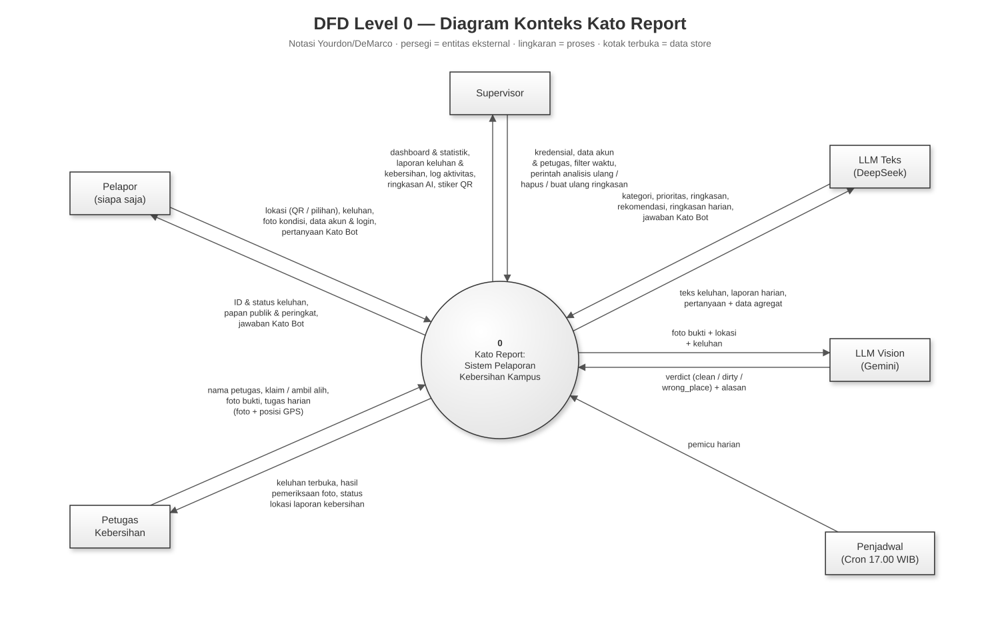
Diagram konteks adalah pandangan paling luas. Seluruh aplikasi digambar sebagai satu lingkaran saja (proses “0”), seolah-olah sebuah kotak tertutup. Yang terlihat hanyalah siapa yang berhubungan dengan sistem dan data apa yang dipertukarkan. Isi di dalam kotak sengaja belum diperlihatkan; itu tugas Level 1.
Di level ini belum ada data store, karena penyimpanan data adalah urusan di dalam sistem. Pihak manusia digambar di kiri dan atas, layanan AI dan penjadwal di kanan.
| Entitas | Data yang dikirim ke sistem | Data yang diterima dari sistem |
|---|---|---|
| Pelapor | Lokasi (dari QR atau pilihan gedung dan lantai); teks keluhan; foto kondisi; data registrasi dan login (bila ingin punya akun); pertanyaan untuk Kato Bot. | Nomor dan status keluhan; papan publik dan papan peringkat; jawaban Kato Bot. |
| Petugas | Nama petugas (dipilih dari daftar); permintaan klaim atau ambil alih; foto bukti; tugas harian berupa foto per tugas dan posisi GPS. | Daftar keluhan terbuka; hasil pemeriksaan foto (diterima, atau ditolak beserta alasannya); status lokasi laporan kebersihan. |
| Supervisor | Nama pengguna dan kata sandi; data akun dan petugas; filter waktu; perintah analisis ulang, hapus keluhan, atau buat ulang ringkasan. | Dashboard dan statistik; laporan keluhan dan kebersihan; log aktivitas; ringkasan AI; stiker QR siap cetak. |
| LLM Teks | Hasil kerjanya: kategori, prioritas, ringkasan, rekomendasi; paragraf ringkasan harian; jawaban Kato Bot. | Teks keluhan; daftar ringkasan keluhan hari itu; pertanyaan beserta data rekap. |
| LLM Vision | Penilaian foto (clean, dirty, atau wrong_place) dan alasannya. | Foto bukti beserta lokasi dan keluhan aslinya. |
| Penjadwal | Sinyal pemicu setiap pukul 17.00 WIB. | (tidak menerima apa pun) |
Level 1 “membuka tutup” kotak di Level 0. Proses tunggal “0” dipecah menjadi sembilan proses, dan kedelapan data store mulai terlihat. Semua entitas dan aliran dari Level 0 tetap ada; sekarang terlihat proses mana yang menanganinya.
Banyak proses membaca atau menulis D3 Laporan, jantung sistem ini. Supaya garis tidak bersilangan, diagram memakai salinan simbol (lihat Bagian 5): setiap proses digambar bersama data store dan entitas yang dipakainya, seperti “meja kerja” masing-masing. Diagram ditampilkan di halaman berikut pada kertas A3 mendatar. Perbesar tampilan PDF bila perlu; gambar tetap tajam.
Cara membaca susunannya, dari atas ke bawah:
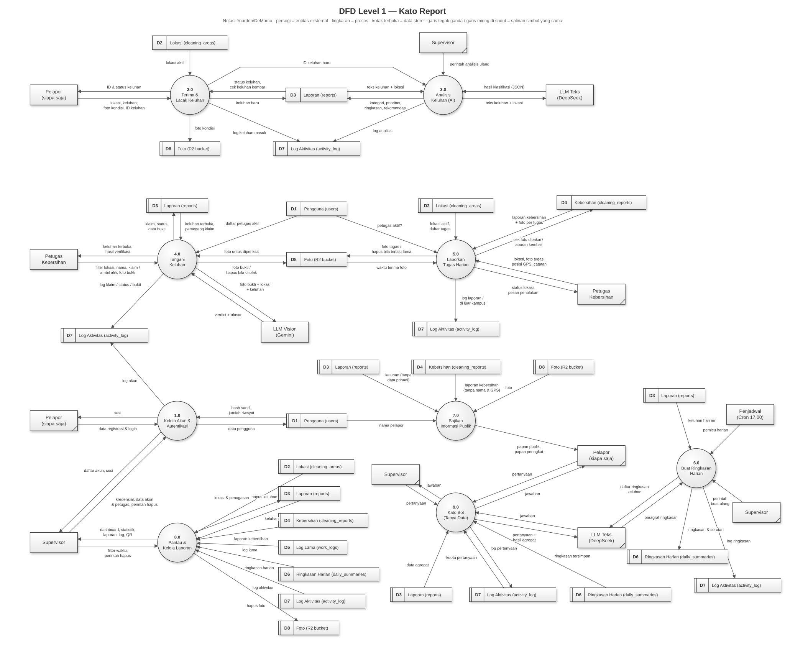
Gambar 2. DFD Level 1: sembilan proses, delapan data store. Simbol bergaris tegak ganda atau bergaris miring di sudut adalah salinan.
| Proses | Apa yang dikerjakan | Data store yang dipakai |
|---|---|---|
| 1.0 Kelola Akun & Autentikasi | Pendaftaran akun pelapor, pemeriksaan login, pembuatan “tiket masuk” (sesi), serta pengelolaan akun dan daftar petugas oleh supervisor, termasuk menghapus akun yang belum punya riwayat. | D1 (baca & tulis), D7 |
| 2.0 Terima & Lacak Keluhan | Menampilkan pilihan lokasi setelah QR dipindai, menerima foto dan keluhan, memeriksa kelengkapan, menyimpan keluhan, dan menjawab pertanyaan “keluhan saya sudah sampai mana?”. | D2 (baca), D3, D8, D7 |
| 3.0 Analisis Keluhan (AI) | Mengirim teks keluhan ke LLM Teks dan menyimpan hasilnya: kategori, prioritas, ringkasan, saran tindakan. Berjalan di belakang layar, sehingga pelapor tidak perlu menunggu. | D3 (baca & tulis), D7 |
| 4.0 Tangani Keluhan | Menampilkan keluhan terbuka kepada petugas, mencatat klaim dan pengambilalihan, menerima foto bukti, meminta LLM Vision menilainya, dan mengubah status menjadi selesai hanya bila foto dinilai bersih. | D1 (baca), D3, D8, D7 |
| 5.0 Laporkan Tugas Harian | Menerima laporan enam tugas harian per lokasi: foto langsung dari kamera, waktu server, dan posisi GPS yang dibandingkan dengan batas kampus. Laporan di luar kampus atau tanpa GPS tetap diterima tetapi ditandai. | D1 (baca), D2 (baca), D4, D8, D7 |
| 6.0 Buat Ringkasan Harian | Setiap pukul 17.00, atau saat supervisor meminta, mengumpulkan keluhan hari itu dan meminta LLM Teks menyusun satu paragraf ringkasan. | D3 (baca), D6, D7 |
| 7.0 Sajikan Informasi Publik | Menampilkan papan keluhan dan papan laporan kebersihan untuk umum (tanpa data pribadi), papan peringkat pelapor, dan foto. | D1, D3, D4, D8 (semua baca) |
| 8.0 Pantau & Kelola Laporan | Dashboard supervisor: daftar keluhan, statistik dan grafik, laporan kebersihan dengan rekap per petugas, log, penghapusan keluhan, dan pembuatan stiker QR. | D2–D8 |
| 9.0 Kato Bot (Tanya Data) | Menerima pertanyaan bebas, meminta LLM Teks memilih rekap data yang dibutuhkan, menjalankan rekap itu, lalu mengirim jawabannya. | D3, D6, D7 |
Setiap proses di Level 1 dipecah lagi menjadi langkah-langkah yang lebih kecil. Nomor sub-proses mengikuti induknya: proses 4.0 dipecah menjadi 4.1 sampai 4.5. Diagram Level 2 hanya menampilkan entitas dan data store yang berhubungan dengan proses itu, sehingga jauh lebih mudah dibaca daripada Level 1.
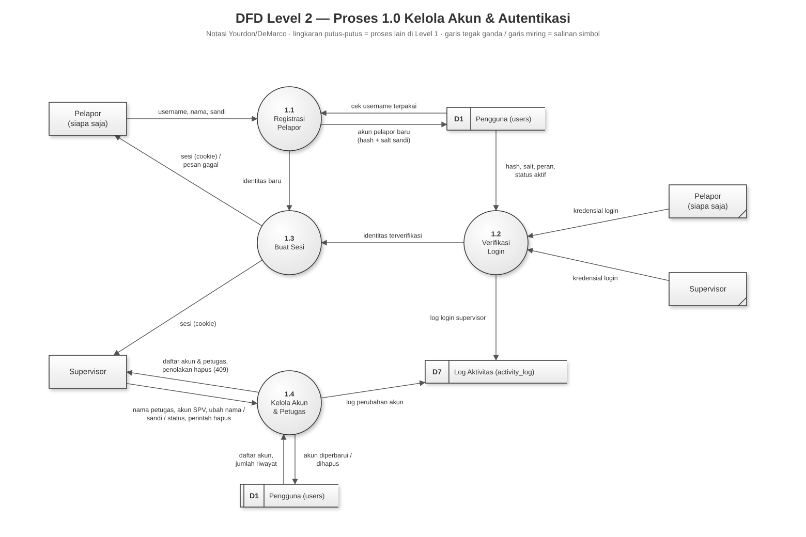
Proses ini mengurus siapa boleh masuk dan siapa terdaftar. Petugas kebersihan tidak pernah login; nama mereka hanya didaftarkan oleh supervisor, lalu dipilih dari daftar saat bekerja.
| Sub-proses | Penjelasan | Masuk | Keluar |
|---|---|---|---|
| 1.1 Registrasi Pelapor | Pelapor mengisi nama pengguna (minimal 3 karakter), nama, dan kata sandi (minimal 8 karakter). Sistem memastikan nama pengguna belum dipakai, lalu menyimpan akun dengan kata sandi yang sudah diacak. Pendaftaran mandiri selalu menghasilkan akun pelapor, tidak pernah supervisor. | Data pendaftaran (Pelapor); cek nama pengguna (D1) | Akun baru (D1); identitas baru (1.3) |
| 1.2 Verifikasi Login | Mencocokkan kata sandi dengan versi acaknya di D1. Akun nonaktif dan akun petugas ditolak. “Nama tidak dikenal” dan “kata sandi salah” sengaja diberi pesan yang sama, supaya orang iseng tidak bisa menebak nama pengguna mana yang ada. Login supervisor dicatat di D7. | Kredensial (Pelapor, Supervisor); data akun (D1) | Identitas terverifikasi (1.3); log login (D7) |
| 1.3 Buat Sesi | Memberi “tiket masuk” berupa cookie bertanda tangan digital, sehingga pengguna tidak perlu login ulang setiap membuka halaman. Tanda tangan itu mencegah orang memalsukan tiketnya. | Identitas (1.1, 1.2) | Sesi (Pelapor, Supervisor) |
| 1.4 Kelola Akun & Petugas | Supervisor menambah nama petugas atau akun supervisor lain, mengganti nama atau kata sandi, menonaktifkan, atau menghapus akun. Aturan pengamannya: akun yang sudah punya riwayat (keluhan, laporan kebersihan, log pekerjaan) tidak bisa dihapus (ditolak dengan kode 409; gunakan nonaktifkan), supervisor tidak bisa menghapus atau menonaktifkan dirinya sendiri, supervisor aktif terakhir tidak bisa dihapus, dan petugas tidak bisa diberi kata sandi. Setiap perubahan dicatat di D7. | Perintah (Supervisor); daftar akun dan jumlah riwayat (D1) | Akun diperbarui atau dihapus (D1); daftar akun, penolakan (Supervisor); log (D7) |
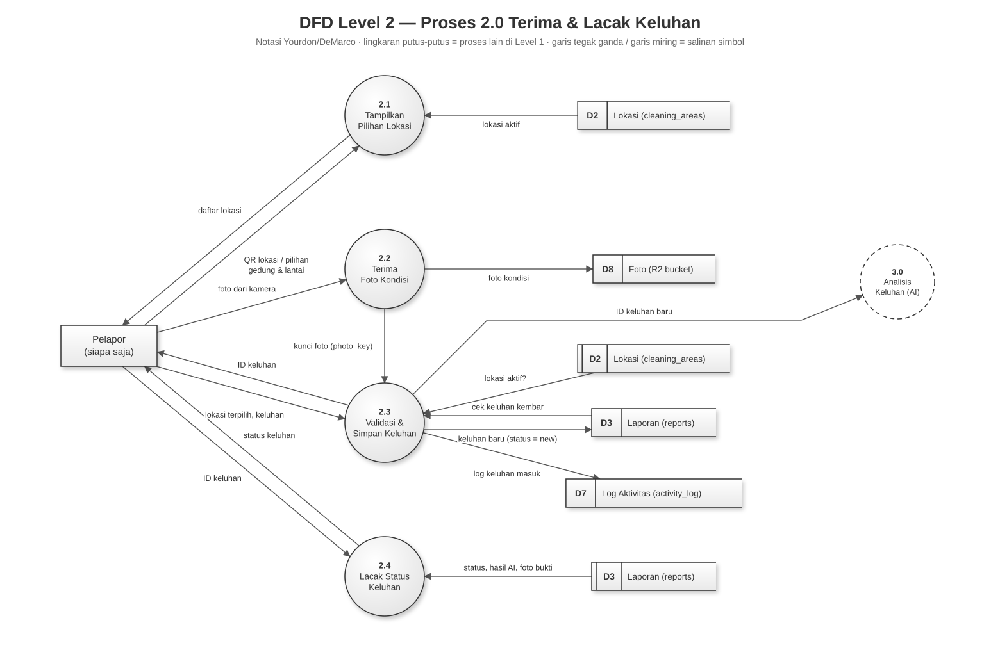
Inilah pintu masuk semua keluhan. Foto dikirim lebih dulu, baru kemudian keluhannya. Dengan begitu keluhan yang tersimpan selalu sudah punya foto.
| Sub-proses | Penjelasan | Masuk | Keluar |
|---|---|---|---|
| 2.1 Tampilkan Pilihan Lokasi | Satu stiker QR mewakili satu lokasi. Setelah QR dipindai, lokasinya langsung terpilih; tanpa QR, pelapor memilih sendiri Gedung lalu Lantai/Halaman dari daftar lokasi aktif. | QR atau pilihan (Pelapor); lokasi aktif (D2) | Daftar lokasi (Pelapor) |
| 2.2 Terima Foto Kondisi | Foto diambil langsung dari kamera, tidak bisa dari galeri. Sistem hanya menerima JPG, PNG, atau WebP maksimal 5 MB, menyimpannya di D8 sebagai foto jenis “report”, dan mengembalikan “kunci” untuk foto itu. | Foto (Pelapor) | Foto (D8); kunci foto (2.3) |
| 2.3 Validasi & Simpan Keluhan | Memeriksa teks keluhan (minimal 5 karakter), bahwa foto yang dilampirkan memang foto kondisi, dan bahwa lokasinya ada dan aktif. Lalu memeriksa keluhan kembar: bila keluhan yang sama persis untuk lokasi yang sama sudah masuk dalam 2 menit terakhir (misalnya tombol kirim tertekan dua kali), nomor lama yang dipakai. Bila bukan kembar, keluhan disimpan dengan status new, dicatat di D7, nomornya dikirim ke pelapor, dan proses 3.0 diberi tahu. Bila pelapor sedang login, keluhan terhubung ke akunnya. | Lokasi & keluhan (Pelapor); kunci foto (2.2); D2; D3 | Keluhan (D3); log (D7); ID keluhan (Pelapor, 3.0) |
| 2.4 Lacak Status Keluhan | Dengan nomor keluhan, siapa pun bisa melihat perkembangannya: status, hasil analisis AI, dan foto bukti bila sudah selesai. Pelapor yang punya akun juga bisa melihat daftar semua keluhannya. | ID keluhan (Pelapor); data keluhan (D3) | Status (Pelapor) |
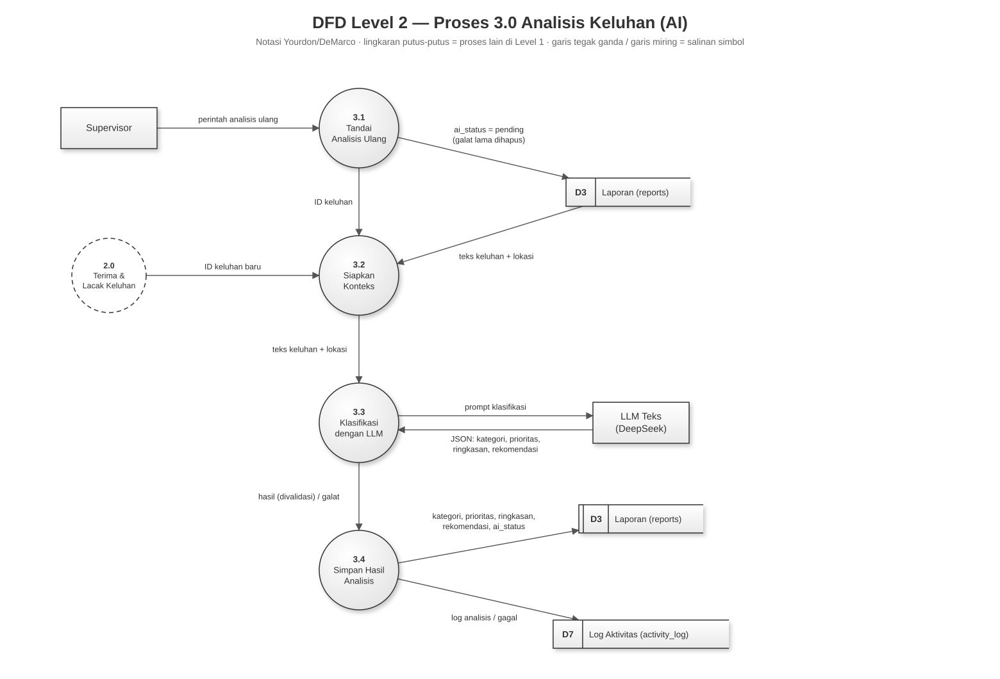
Inilah bagian yang membuat keluhan bebas seperti “wc nya bau bgt, air ga ngalir” menjadi tiket kerja rapi. Semuanya berjalan otomatis setelah keluhan tersimpan.
| Sub-proses | Penjelasan | Masuk | Keluar |
|---|---|---|---|
| 3.1 Tandai Analisis Ulang | Bila analisis sebelumnya gagal (misalnya layanan AI sedang sibuk), supervisor bisa menekan tombol analisis ulang. Status analisis dikembalikan ke “menunggu” dan pesan kesalahan lama dihapus. | Perintah (Supervisor) | Status menunggu (D3); ID keluhan (3.2) |
| 3.2 Siapkan Konteks | Mengambil teks keluhan dan nama lokasinya (misalnya “Gedung C (Perkuliahan) – Lantai 2”) sebagai bahan untuk AI. | ID keluhan (2.0 atau 3.1); teks & lokasi (D3) | Teks + lokasi (3.3) |
| 3.3 Klasifikasi dengan LLM | Mengirim teks ke LLM Teks beserta aturan penilaian. AI menjawab dalam format terstruktur: kategori (kebersihan, perlengkapan, kerusakan, bau, genangan, lainnya; boleh lebih dari satu), prioritas (rendah, sedang, tinggi, ditentukan oleh risiko keselamatan, bukan jumlah kata), ringkasan netral, dan rekomendasi tindakan. Jawaban AI diperiksa dan dirapikan dulu; nilai di luar daftar tidak diterima. | Teks + lokasi (3.2); hasil (LLM Teks) | Prompt (LLM Teks); hasil atau galat (3.4) |
| 3.4 Simpan Hasil Analisis | Bila berhasil, hasil disimpan dan status analisis menjadi “ok”. Bila gagal, keluhan tidak hilang: status analisis menjadi “gagal”, keluhan tetap tampil tanpa label, dan bisa dianalisis ulang lewat 3.1. Keduanya dicatat di D7. | Hasil / galat (3.3) | Hasil analisis (D3); log (D7) |
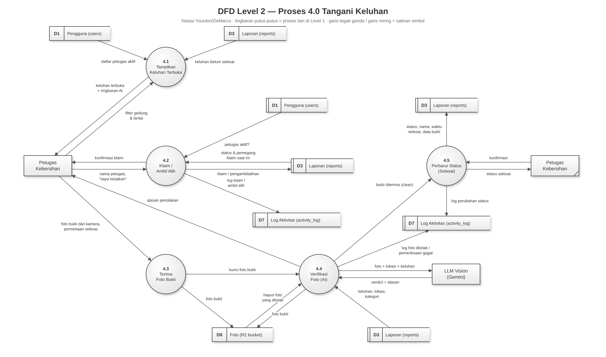
Proses ini memegang aturan terpenting sistem: keluhan hanya boleh selesai bila ada foto bukti yang dinilai bersih oleh AI. Tidak ada tahap “memilih nama” di awal; nama ditanyakan saat petugas bertindak (klaim atau menyelesaikan), dengan nama terakhir di ponsel sebagai isian awal.
| Sub-proses | Penjelasan | Masuk | Keluar |
|---|---|---|---|
| 4.1 Tampilkan Keluhan Terbuka | Semua keluhan yang belum selesai tampil tanpa harus memilih apa pun, yang paling mendesak di atas, lengkap dengan ringkasan dan saran dari AI. Gedung dan lantai hanya penyaring (“Semua gedung”, “Semua”). Daftar nama petugas aktif dimuat untuk pilihan nama. | Filter (Petugas); D1; keluhan belum selesai (D3) | Keluhan terbuka + ringkasan AI (Petugas) |
| 4.2 Klaim / Ambil Alih | “Saya kerjakan sekarang” membuka pertanyaan “Siapa yang mengerjakan?”. Setelah nama dipilih, status menjadi in_progress dengan nama petugas itu. Klaim bukan kunci: selama belum selesai dengan foto bukti, petugas lain boleh mengambil alih, dan perpindahan tercatat di D7 (“X mengambil alih … dari Y”). Klaim ulang oleh orang yang sama tidak dicatat dua kali. Keluhan yang sudah selesai tidak bisa dibuka lagi (kode 409). | Nama & klaim (Petugas); D1; status & pemegang saat ini (D3) | Klaim (D3); log (D7); konfirmasi (Petugas) |
| 4.3 Terima Foto Bukti | Setelah membersihkan, petugas menekan “Sudah beres - foto buktinya” (sekali lagi ditanya siapa yang menyelesaikan), lalu memotret dengan kamera. Foto disimpan di folder khusus “proof”. Foto kondisi dari pelapor tidak bisa dipakai ulang sebagai bukti. | Foto & permintaan selesai (Petugas) | Foto (D8); kunci foto (4.4) |
| 4.4 Verifikasi Foto (AI) | Foto dikirim ke LLM Vision bersama nama lokasi dan keluhan aslinya. Ada tiga kemungkinan hasil:
| Kunci (4.3); foto (D8); keluhan (D3); penilaian (LLM Vision) | Foto + konteks (LLM Vision); hapus foto (D8); log (D7); alasan (Petugas); bukti diterima (4.5) |
| 4.5 Perbarui Status (Selesai) | Perubahan ke resolved diperiksa sekali lagi: harus ada foto bukti yang dinilai bersih. Nama petugas, waktu selesai, foto, putusan, dan alasan disimpan bersama, lalu dicatat di D7. Sejak saat itu foto bukti tampil di papan publik. | Bukti diterima (4.4); konfirmasi (Petugas) | Status, nama, waktu selesai, data bukti (D3); log (D7); status selesai (Petugas) |
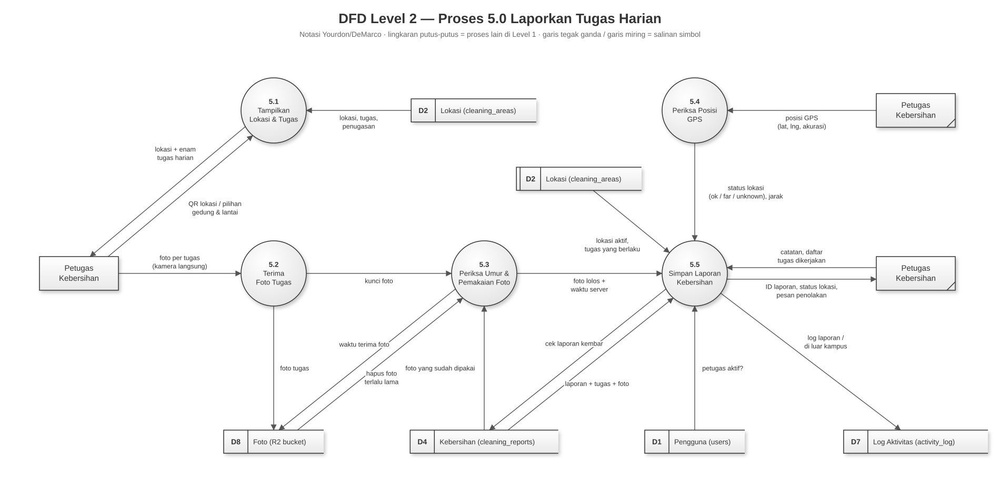
Tidak semua pembersihan berawal dari keluhan. Proses ini menerima laporan kerja rutin: enam tugas tetap per lokasi, difoto satu per satu. Dulu bukti kerja dikirim lewat pesan WhatsApp dengan foto yang bisa saja lama; aturan di bawah dibuat supaya foto lama tidak bisa menggantikan kerja hari ini. Proses ini tidak memakai LLM Vision: bukti kerja adalah foto langsung, waktu server, dan posisi.
| Sub-proses | Penjelasan | Masuk | Keluar |
|---|---|---|---|
| 5.1 Tampilkan Lokasi & Tugas | Petugas memilih lokasi (atau membuka stiker /clean/<kode> yang langsung menuju tab Tugas harian) dan melihat enam tugas: menyapu & mengepel, mengelap kaca jendela, membersihkan toilet, membuang sampah, mengisi ulang galon, merapikan ruangan. Petugas boleh mengirim di lokasi mana pun; supervisor melihat selisihnya di rekap per petugas. | QR atau pilihan (Petugas); lokasi, tugas, penugasan (D2) | Lokasi + enam tugas (Petugas) |
| 5.2 Terima Foto Tugas | Tiap tugas difoto langsung dari kamera (tidak ada pilihan dari galeri) dan diunggah saat itu juga, sehingga waktu server menerima foto sama dengan waktu foto diambil. Foto disimpan sebagai jenis “cleaning”. | Foto per tugas (Petugas) | Foto (D8); kunci foto (5.3) |
| 5.3 Periksa Umur & Pemakaian Foto | Waktu yang dihitung adalah waktu server menerima foto, bukan jam ponsel. Foto yang lebih dari 3 jam dihapus dan ditolak. Satu foto hanya boleh membuktikan satu tugas satu kali: foto yang sudah dipakai ditolak. Kiriman ganda dengan foto yang sama persis dijawab dengan laporan yang sudah ada. | Kunci (5.2); waktu terima (D8); foto yang sudah dipakai (D4) | Foto lolos + waktu server (5.5); hapus foto (D8) |
| 5.4 Periksa Posisi GPS | Posisi ponsel (lintang, bujur, akurasi) dibandingkan dengan pusat kampus. Hasilnya ok (di dalam radius kampus), far (di luar), atau unknown (tanpa GPS). Laporan yang far atau unknown tetap diterima, tetapi ditandai supaya supervisor melihatnya; petugas diperingatkan lebih dulu dan boleh memilih “Tetap kirim (supervisor diberi tahu)”. | Posisi GPS (Petugas) | Status lokasi dan jarak (5.5) |
| 5.5 Simpan Laporan Kebersihan | Memastikan petugas aktif, lokasinya aktif, dan tugas itu berlaku di lokasi tersebut, lalu menyimpan laporan beserta tugas dan fotonya. Dicatat di D7 (cleaning_reported, dan cleaning_out_of_range bila ditandai). Pelapor mendapat status lokasi atau pesan penolakan. | Foto lolos (5.3); status lokasi (5.4); catatan (Petugas); D1; D2; D4 | Laporan + tugas + foto (D4); log (D7); ID dan status lokasi (Petugas) |
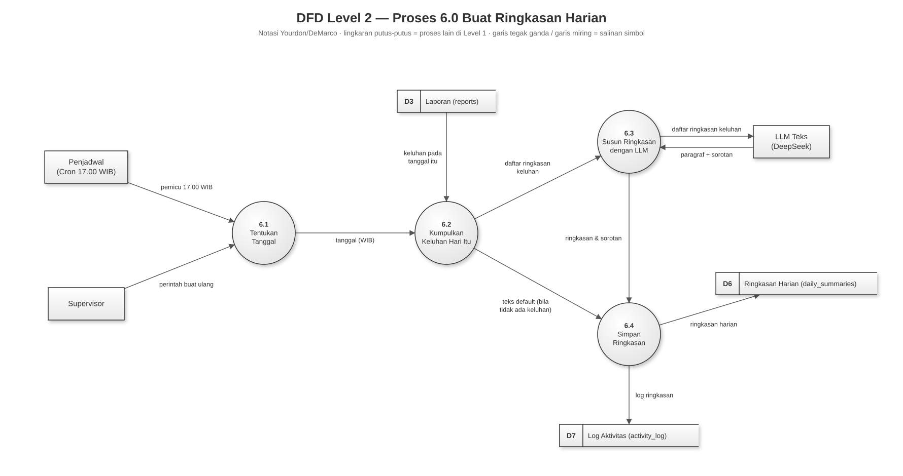
| Sub-proses | Penjelasan | Masuk | Keluar |
|---|---|---|---|
| 6.1 Tentukan Tanggal | Dipicu oleh penjadwal setiap pukul 17.00 WIB, atau oleh supervisor yang menekan tombol “Buat ulang” pada kartu ringkasan AI. Tanggal dihitung dalam zona waktu WIB. | Pemicu (Penjadwal); perintah (Supervisor) | Tanggal (6.2) |
| 6.2 Kumpulkan Keluhan Hari Itu | Mengambil semua keluhan pada tanggal itu. Bila tidak ada satu pun, AI tidak dipanggil (hemat biaya); langsung dipakai kalimat “Tidak ada keluhan yang masuk pada hari ini.” | Tanggal (6.1); keluhan (D3) | Daftar keluhan (6.3) atau teks default (6.4) |
| 6.3 Susun Ringkasan dengan LLM | LLM Teks membaca daftar ringkasan keluhan dan menulis satu paragraf yang menyebut lokasi terburuk dan tindakan paling mendesak, beserta beberapa poin sorotan. | Daftar keluhan (6.2); hasil (LLM Teks) | Ringkasan (6.4) |
| 6.4 Simpan Ringkasan | Menyimpan ringkasan ke D6. Bila ringkasan hari itu sudah ada, ringkasan lama ditimpa. Dicatat di D7. Ringkasan ini tampil di kartu paling atas tab Ringkasan dashboard. | Ringkasan (6.2 atau 6.3) | Ringkasan harian (D6); log (D7) |
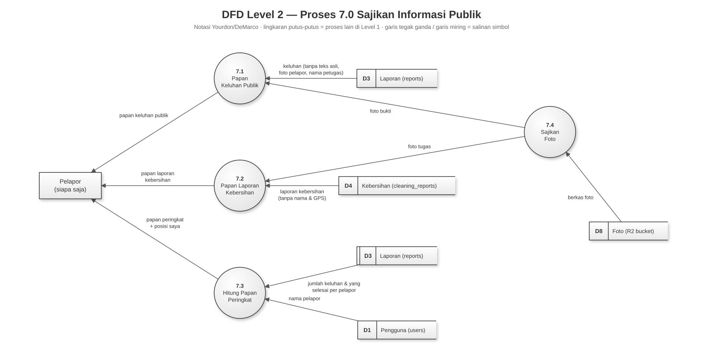
Proses ini melayani halaman-halaman yang terbuka tanpa login. Seluruh alirannya hanya membaca data; tidak ada yang ditulis.
| Sub-proses | Penjelasan | Masuk | Keluar |
|---|---|---|---|
| 7.1 Papan Keluhan Publik | Menampilkan keluhan kepada umum dengan menyaring data pribadi: teks asli keluhan, foto dari pelapor, dan nama petugas tidak ditampilkan. Yang tampil adalah lokasi, kategori, status, ringkasan, dan foto bukti yang sudah diverifikasi, karena foto itulah yang membuktikan pekerjaan benar-benar selesai. | Keluhan tersaring (D3); foto bukti (7.4) | Papan keluhan (Pelapor) |
| 7.2 Papan Laporan Kebersihan | Menampilkan laporan tugas harian terbaru: lokasi, tugas beserta fotonya, catatan, dan waktu. Seperti papan keluhan, tanpa nama petugas, dan posisi GPS beserta tandanya hanya untuk supervisor. | Laporan kebersihan (D4); foto tugas (7.4) | Papan laporan kebersihan (Pelapor) |
| 7.3 Hitung Papan Peringkat | Menghitung 20 pelapor terdaftar dengan keluhan terbanyak, beserta berapa keluhannya yang sudah selesai. Pelapor yang login juga melihat posisinya sendiri. | Jumlah keluhan (D3); nama pelapor (D1) | Papan peringkat (Pelapor) |
| 7.4 Sajikan Foto | Mengirim berkas foto dari D8 lewat aplikasi sendiri, bukan lewat alamat penyimpanan luar. Alasannya: sebagian penyedia internet di Indonesia memblokir alamat penyimpanan itu, sehingga foto bisa gagal tampil di jaringan kampus. | Berkas foto (D8) | Foto (7.1, 7.2) |
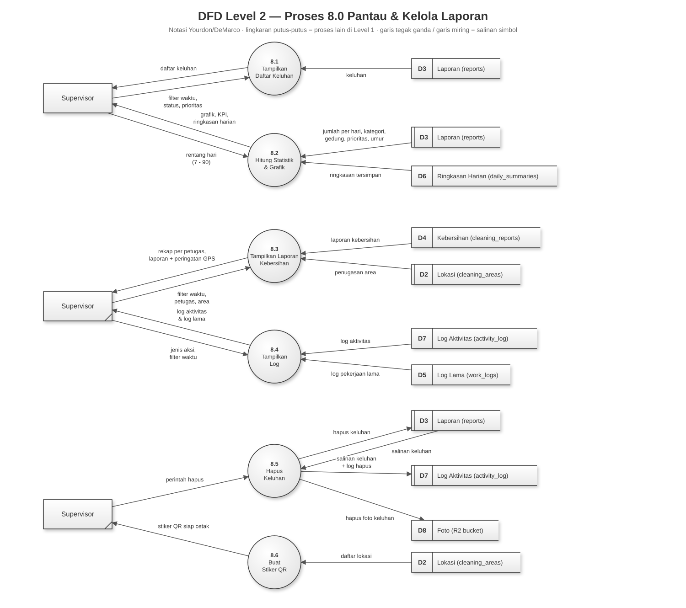
Proses ini mencakup lima tab dashboard supervisor (Ringkasan, Laporan, Log, Petugas & Supervisor, QR lokasi). Tab Petugas & Supervisor dibahas di proses 1.4. Diagram menggambarkan Supervisor tiga kali hanya agar garis tidak saling menyilang; ketiganya satu pihak yang sama.
| Sub-proses | Penjelasan | Masuk | Keluar |
|---|---|---|---|
| 8.1 Tampilkan Daftar Keluhan | Tab Laporan › Keluhan. Menampilkan keluhan dengan waktu masuk dan waktu selesai yang tepat. Bisa disaring menurut status, prioritas, dan filter waktu: preset (semua, hari ini, kemarin, 7 hari, 30 hari, rentang tanggal) ditambah jam dari/sampai berketelitian satu menit (WIB; jendela yang melewati tengah malam, misalnya 22.00–06.00, didukung). | Filter (Supervisor); keluhan (D3) | Daftar keluhan (Supervisor) |
| 8.2 Hitung Statistik & Grafik | Tab Ringkasan. Menghitung angka dan grafik untuk rentang 7/14/30/90 hari (bawaan 90): tingkat penyelesaian, keluhan masuk lawan selesai, status, prioritas, kategori, gedung, umur keluhan terbuka, waktu penyelesaian, serta pola hari dan jam. Hari tanpa keluhan diisi angka nol, bukan dilewati, supaya grafik tidak menyesatkan. Kartu ringkasan AI hari ini dibaca dari D6. | Rentang hari (Supervisor); keluhan (D3); ringkasan tersimpan (D6) | Grafik, KPI, ringkasan harian (Supervisor) |
| 8.3 Tampilkan Laporan Kebersihan | Tab Laporan › Kebersihan. Menampilkan rekap harian per petugas: untuk tiap lokasi yang ditugaskan kepadanya, tugas mana yang sudah dikirim dan jam berapa; tugas yang belum dikirim adalah celah yang perlu ditindaklanjuti. Dilengkapi daftar laporan dengan foto dan peringatan untuk laporan di luar kampus atau tanpa GPS. | Filter (Supervisor); laporan kebersihan (D4); penugasan (D2) | Rekap, laporan, peringatan GPS (Supervisor) |
| 8.4 Tampilkan Log | Tab Log. Log aktivitas (D7) adalah jejak audit yang tidak terhapus, bisa disaring menurut jenis aksi dan waktu, dengan waktu persis. Log pekerjaan (D5) adalah data lama yang hanya bisa dibaca. | Jenis aksi & filter waktu (Supervisor); D7; D5 | Log aktivitas & log lama (Supervisor) |
| 8.5 Hapus Keluhan | Satu-satunya tindakan yang benar-benar menghapus data keluhan. Karena itu, salinan lengkap keluhan disimpan dulu ke D7 sebelum keluhannya dihapus dari D3 dan fotonya dari D8. Pimpinan tetap bisa melihat keluhan yang hilang dan siapa yang menghapusnya. | Perintah (Supervisor); salinan (D3) | Salinan + log (D7); hapus (D3, D8) |
| 8.6 Buat Stiker QR | Tab QR lokasi. Membuat satu stiker QR per lokasi dari daftar lokasi aktif. QR mengarah ke /report/<kode>, stikernya dwibahasa (Indonesia dan Inggris), siap cetak di kertas A4 atau diunduh sebagai PNG. Yang mencetak dan menempelnya adalah supervisor. | Daftar lokasi (D2) | Stiker QR (Supervisor) |
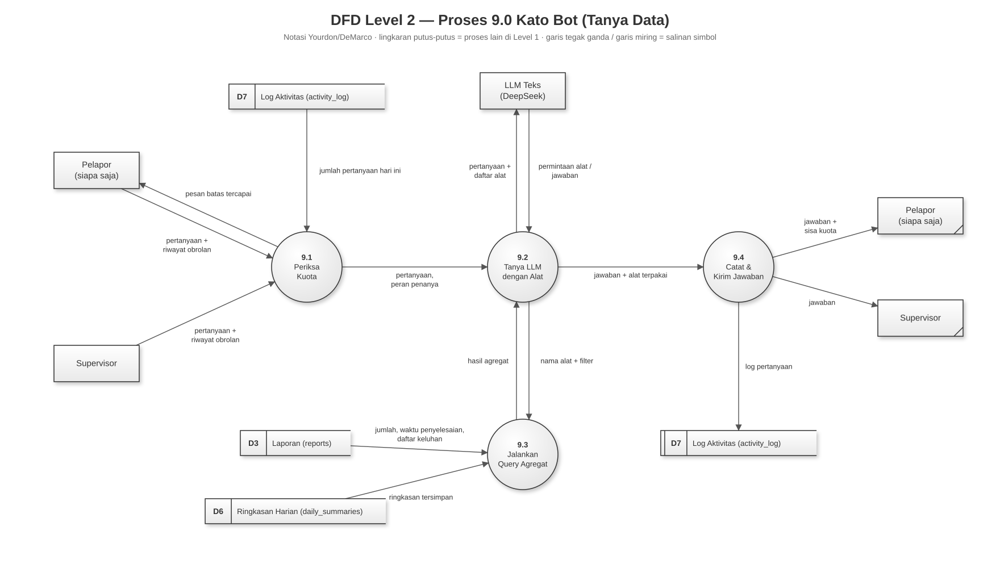
Kato Bot adalah asisten AI tanya-data. Ia berbentuk ikon melayang di setiap halaman: bisa diseret ke mana saja, dan saat diketuk menempel ke tepi layar terdekat lalu membuka jendela obrolan. Seperti bertanya kepada seorang analis data, dengan satu hal yang menarik: AI tidak pernah melihat data mentah. AI hanya boleh “meminta” rekap tertentu (misalnya “hitung keluhan per gedung bulan ini”), lalu sistem sendiri yang menghitungnya dan mengembalikan angkanya.
| Sub-proses | Penjelasan | Masuk | Keluar |
|---|---|---|---|
| 9.1 Periksa Kuota | Untuk membatasi biaya, ada batas 50 pertanyaan per hari untuk semua orang bersama-sama, dan 20 per perangkat untuk penanya yang bukan supervisor. Hitungannya diambil dari catatan pertanyaan di D7. Bila batas tercapai, penanya diberi tahu. | Pertanyaan (Pelapor, Supervisor); jumlah hari ini (D7) | Pesan batas (Pelapor); pertanyaan (9.2) |
| 9.2 Tanya LLM dengan Alat | Pertanyaan dikirim ke LLM Teks bersama daftar “alat” yang boleh dipakainya: count_reports (hitung keluhan), resolution_time (waktu penyelesaian), list_reports (daftar keluhan, maksimal 15), dan daily_summary (ringkasan harian). AI memilih alat, sistem menjalankannya (9.3), hasilnya dikembalikan ke AI, lalu AI menyusun jawaban singkat. Hanya ujung percakapan terbaru yang ikut dikirim. | Pertanyaan (9.1); permintaan alat & jawaban (LLM Teks); hasil rekap (9.3) | Pertanyaan + alat (LLM Teks); nama alat (9.3); jawaban (9.4) |
| 9.3 Jalankan Query Agregat | Menjalankan rekap yang diminta. Pengaman privasi: rekap per nama petugas hanya boleh untuk supervisor; untuk penanya lain permintaan itu ditolak, bahkan bila AI memintanya. Penanya dianggap supervisor bila sesinya bukan sesi pelapor. | Nama alat & filter (9.2); D3; D6 | Hasil rekap (9.2) |
| 9.4 Catat & Kirim Jawaban | Mencatat pertanyaan di D7 (termasuk alat yang dipakai), lalu mengirim jawaban beserta sisa kuota hari itu. | Jawaban (9.2) | Log (D7); jawaban (Pelapor, Supervisor) |
Kalau DFD berfokus pada data yang mengalir, UML berfokus pada bagaimana sistem dirancang. Dokumen ini memuat tiga jenis diagram UML, masing-masing untuk pertanyaan yang berbeda:
Gambar berikut (halaman berikutnya, kertas A3 mendatar) memperlihatkan seluruh fitur Kato Report: 24 use case untuk tiga aktor manusia dan tiga aktor sistem.
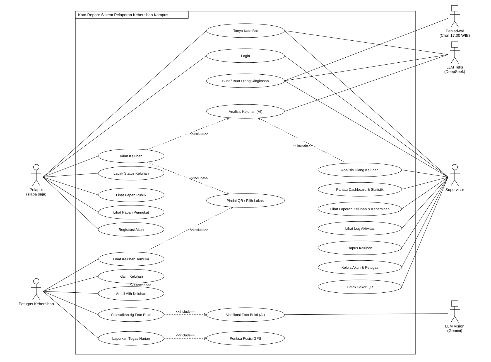
Gambar 12. Use case diagram: 24 use case, 3 aktor manusia, 3 aktor sistem.
| Simbol | Arti |
|---|---|
| Orang-orangan (stick figure) | Aktor manusia: orang yang memakai sistem. |
| Orang-orangan berkepala kotak | Aktor sistem: sistem lain yang ikut terlibat, yaitu kedua layanan AI dan penjadwal. |
| Kotak besar berlabel di pojok kiri atas | Batas sistem. Semua yang di dalamnya adalah fitur aplikasi ini. |
| Elips (oval) | Use case: satu fitur atau tujuan yang bisa dicapai pengguna, ditulis sebagai kata kerja (“Kirim Keluhan”). |
| Garis polos | Asosiasi: aktor ini memakai atau terlibat dalam fitur ini. |
| Panah putus-putus <<include>> | Fitur di pangkal panah selalu menjalankan fitur di ujung panah. Contoh: setiap “Kirim Keluhan” diawali “Pindai QR / Pilih Lokasi” dan memicu “Analisis Keluhan (AI)”. |
| Panah putus-putus <<extend>> | Fitur di pangkal panah adalah variasi dari fitur di ujung panah dan hanya terjadi pada kondisi tertentu. “Ambil Alih Keluhan” adalah variasi dari “Klaim Keluhan”: terjadi bila keluhan sudah dipegang petugas lain dan belum selesai. |
| Aktor | Use case | Penjelasan |
|---|---|---|
| Pelapor (siapa saja) | Kirim Keluhan | Pilih lokasi, tulis keluhan, foto, kirim. Selalu diawali Pindai QR / Pilih Lokasi dan selalu memicu Analisis Keluhan (AI). |
| Lacak Status Keluhan | Memantau keluhan dengan nomornya. | |
| Lihat Papan Publik | Melihat keluhan dan laporan kebersihan tanpa login. Data pribadi disaring. | |
| Lihat Papan Peringkat | Melihat pelapor teraktif dan posisinya sendiri. | |
| Registrasi Akun | Opsional; hanya perlu bila ingin masuk papan peringkat. | |
| Login | Masuk dengan akun yang sudah didaftarkan. | |
| Tanya Kato Bot | Bertanya dalam bahasa sehari-hari; dijawab AI berdasarkan rekap data. | |
| Petugas Kebersihan | Lihat Keluhan Terbuka | Diawali Pindai QR / Pilih Lokasi (sebagai penyaring). Menampilkan semua keluhan yang belum selesai, urut dari yang paling mendesak. |
| Klaim Keluhan | “Saya kerjakan sekarang”, dengan memilih nama saat bertindak. | |
| Ambil Alih Keluhan | Variasi klaim: mengambil keluhan dari petugas lain selama belum selesai dengan foto bukti. Tercatat di log aktivitas. | |
| Selesaikan dg Foto Bukti | Mengubah status menjadi selesai dengan foto bukti. Selalu memicu Verifikasi Foto Bukti (AI). | |
| Laporkan Tugas Harian | Mengirim foto per tugas dari enam tugas harian. Selalu memicu Periksa Posisi GPS. | |
| (di-include) | Pindai QR / Pilih Lokasi | Memindai stiker QR di lokasi, atau memilih gedung dan lantai/halaman. Tidak berdiri sendiri: menjadi langkah pertama Kirim Keluhan (pelapor) dan Lihat Keluhan Terbuka (petugas). |
| Supervisor | Login | Wajib untuk masuk dashboard. |
| Tanya Kato Bot | Sama seperti pelapor, tetapi boleh bertanya soal kinerja petugas per nama. | |
| Buat / Buat Ulang Ringkasan | Membuat ulang ringkasan harian kapan saja (selain otomatis setiap 17.00 oleh penjadwal). | |
| Analisis Ulang Keluhan | Mengulang analisis yang gagal. Menjalankan Analisis Keluhan (AI). | |
| Pantau Dashboard & Statistik | Ringkasan, grafik, dan angka-angka ringkas. | |
| Lihat Laporan Keluhan & Kebersihan | Daftar keluhan dengan filter waktu; rekap harian per petugas dan peringatan GPS. | |
| Lihat Log Aktivitas | Menelusuri siapa melakukan apa (dan log pekerjaan lama). | |
| Hapus Keluhan, Kelola Akun & Petugas, Cetak Stiker QR | Menghapus keluhan (salinannya tetap di log); menambah, mengubah, menonaktifkan, atau menghapus akun dan nama petugas; mencetak stiker QR per lokasi. |
| Aktor sistem | Terlibat dalam |
|---|---|
| LLM Teks | Analisis Keluhan (AI), Buat Ringkasan Harian, Tanya Kato Bot |
| LLM Vision | Verifikasi Foto Bukti (AI) |
| Penjadwal | Buat Ringkasan Harian (setiap pukul 17.00 WIB) |
Tugas harian tidak digambar sebagai include “Pindai QR / Pilih Lokasi” karena lokasinya bisa dipilih manual maupun lewat stiker /clean/<kode>. “Lihat Log Pekerjaan” tidak digambar sebagai use case terpisah karena kini hanya membaca data lama (bagian dari Lihat Log Aktivitas).
Setiap kotak adalah satu kelas, yaitu satu jenis “formulir” yang dicatat sistem. Kotak dibagi tiga bagian dari atas ke bawah:
Report (Keluhan).nama : jenis data.
Tanda + berarti boleh dilihat bagian lain; tanda - berarti rahasia (contohnya
passwordHash). Tanda «PK» (primary key) adalah nomor unik tiap
formulir; «FK» (foreign key) adalah rujukan ke formulir lain.submit() (kirim). Operasi yang bergaris bawah milik kelasnya secara keseluruhan, bukan milik satu formulir.| Garis | Arti |
|---|---|
| Garis dengan belah ketupat hitam | Komposisi: bagian yang tidak bisa berdiri sendiri. Tiap tugas (CleaningReportTask) adalah bagian dari satu laporan kebersihan. |
| Garis dengan panah | Asosiasi: satu formulir merujuk formulir lain. Keluhan merujuk lokasi (CleaningArea). |
| Garis putus-putus dengan panah | Ketergantungan: memakai tanpa menyimpan rujukan tetap. Contoh: ringkasan harian dibuat dari keluhan-keluhan. |
| Angka di ujung garis | Multiplisitas (berapa banyak): 1 = tepat satu, 0..1 = boleh tidak ada atau satu, 0..* = boleh tidak ada sampai banyak, 1..* = minimal satu. |
| Label «data lama» | Kelas yang hanya ada demi data sebelum migrasi 0011 dan tidak diisi lagi oleh fitur baru. |
| Kelas | Isi dan maknanya |
|---|---|
| CleaningArea (Lokasi) | Satu lokasi yang bisa dilaporkan atau dibersihkan. Kode unik seperti C-2 (dibawa oleh QR), nama, kode gedung, lantai (0 berarti halaman, kosong berarti tempat utuh seperti Lapang Voli), daftar tugas harian yang berlaku, dan status aktif. Pencarian memakai view location_info yang menggabungkan lokasi dengan data lama. |
| CleaningAssignment | Penugasan: petugas mana ditugaskan di lokasi mana. Satu lokasi bisa dikerjakan beberapa petugas dan satu petugas bisa memegang beberapa lokasi. Dipakai untuk rekap harian per petugas. |
| User (Pengguna) | Satu kelas untuk tiga peran (supervisor, petugas, pelapor), dibedakan oleh atribut role. Kata sandi disimpan sebagai passwordHash dan passwordSalt (acakan satu arah), bertanda rahasia. Petugas tidak punya nama pengguna maupun kata sandi. |
| Report (Keluhan) | Kelas terpenting. Isinya terbagi tiga kelompok: isi keluhan (teks, foto, lokasi, pelapor); alur kerja (status, nama petugas yang memegang, waktu selesai); hasil AI (kategori, prioritas, ringkasan, rekomendasi, serta foto bukti dan penilaiannya). Tepat satu dari areaId atau toiletId terisi; toiletId hanya untuk data lama. Operasi changeStatus() menangani klaim, ambil alih, dan penyelesaian; canResolve() adalah aturan “hanya boleh selesai bila ada foto bukti bersih”. |
| CleaningReport (Laporan Kebersihan) | Satu kiriman tugas harian: lokasi, petugas (namanya disimpan juga sebagai teks, supaya tetap benar bila nama kemudian diganti), catatan, posisi GPS, jarak ke pusat kampus, dan status lokasi (ok, far, unknown). |
| CleaningReportTask | Tugas yang dikerjakan dalam satu laporan kebersihan, dengan foto dan waktu server menerima foto itu. Kunci foto bersifat unik: satu foto tidak bisa membuktikan dua tugas atau dua laporan. |
| DailySummary (Ringkasan Harian) | Satu per tanggal: jumlah keluhan, paragraf ringkasan, poin sorotan. |
| ActivityLog (Log Aktivitas) | Buku catatan kejadian: kapan, apa, siapa, kalimat ringkas, dan rincian. Rujukannya ke keluhan dibuat longgar (garis putus-putus, 0..1) dengan sengaja: bila keluhan dihapus, catatannya tetap ada. Justru keluhan yang dihapus itulah yang paling perlu bisa ditelusuri. |
| WorkLog «data lama, baca-saja» | Catatan kerja rutin versi lama (per toilet, dengan foto yang dinilai bersih). Tidak diisi lagi; hanya dibaca supervisor di tab Log. |
| Toilet «data lama» | Kode unik seperti A-2-MEN (gedung A, lantai 2, pria). Dirujuk oleh keluhan dan log pekerjaan lama. Tabel buildings (gedung A–J) yang melengkapinya tidak digambar terpisah; kodenya muncul sebagai buildingCode. |
Daftar pilihan tetap digambar dalam satu kotak catatan di pojok diagram, supaya garisnya tidak memenuhi gambar.
| Enumeration | Nilai (Inggris) → arti |
|---|---|
| Role | supervisor → pengawas · staff → petugas · reporter → pelapor |
| ReportStatus | new → baru · in_progress → dikerjakan · resolved → selesai (tidak dapat dibuka kembali) |
| Priority | low → rendah · medium → sedang · high → tinggi |
| Category | cleanliness → kebersihan · supplies → perlengkapan · damage → kerusakan · odor → bau · flooding → genangan · other → lainnya |
| ProofVerdict | clean → bersih · dirty → masih kotor · wrong_place → bukan lokasi yang dilaporkan (di data lama, nilai ini dulu bernama not_toilet) |
| AiStatus | pending → menunggu analisis · ok → berhasil · failed → gagal |
| CleaningTask | sweep_mop → menyapu & mengepel · glass → mengelap kaca jendela · toilet → membersihkan toilet · trash → membuang sampah · gallon → mengisi ulang galon · tidy → merapikan ruangan. Dua nilai lama, sweep (menyapu) dan mop (mengepel), hanya ada di laporan sebelum migrasi 0010. |
| LocationStatus | ok → di dalam kampus · far → di luar kampus · unknown → tanpa posisi GPS |
Gambar berikut (halaman berikutnya, kertas A3 mendatar) memperlihatkan percakapan antarbagian sistem sejak pelapor memindai QR sampai AI selesai menganalisis keluhan.
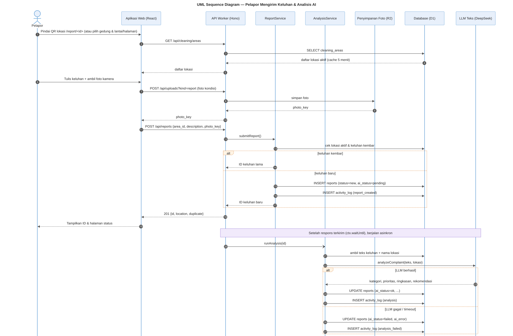
Gambar 14. Urutan kejadian saat pelapor mengirim keluhan, sampai AI selesai menganalisisnya.
| Langkah | Apa yang terjadi |
|---|---|
| 1–5 | Pelapor memindai QR (atau memilih gedung dan lantai/halaman). Aplikasi meminta daftar lokasi aktif ke server; server mengambilnya dari basis data (dan menyimpannya sebentar di memori, 5 menit) lalu mengirimkannya kembali. |
| 6–10 | Pelapor menulis keluhan dan memotret. Foto dikirim lebih dulu ke server, yang menyimpannya di penyimpanan foto dan membalas dengan “kunci” foto. |
| 11–13 | Aplikasi mengirim keluhan (kode lokasi, teks, kunci foto). Server meneruskannya ke bagian ReportService, yang memeriksa lokasinya aktif dan keluhannya bukan kiriman ganda. |
| 14 | Cabang “keluhan kembar”: nomor keluhan lama dikembalikan; tidak ada keluhan baru. |
| 15–17 | Cabang “keluhan baru”: keluhan disimpan dengan status new dan analisis pending, dicatat di log aktivitas, lalu nomornya dikembalikan. |
| 18–19 | Pelapor melihat nomor keluhannya. Bagi pelapor, urusan selesai di sini. |
| 20–22 | Setelah jawaban terkirim, server memerintahkan AnalysisService bekerja (panah berkepala terbuka menandakan “jalankan, tidak perlu ditunggu”). Teks keluhan dan nama lokasi diambil lalu dikirim ke LLM Teks. |
| 23–25 | Bila AI berhasil: kategori, prioritas, ringkasan, dan rekomendasi disimpan; status analisis menjadi ok; dicatat di log. |
| 26–27 | Bila AI gagal atau terlalu lama: status analisis menjadi failed beserta pesan kesalahannya; dicatat di log. Keluhan tetap aman dan bisa dianalisis ulang oleh supervisor. |
Gambar berikut (halaman berikutnya, kertas A3 mendatar) memperlihatkan tiga bagian: membuka daftar keluhan, klaim atau ambil alih (kotak ungu muda), dan penyelesaian dengan foto bukti yang diperiksa AI.
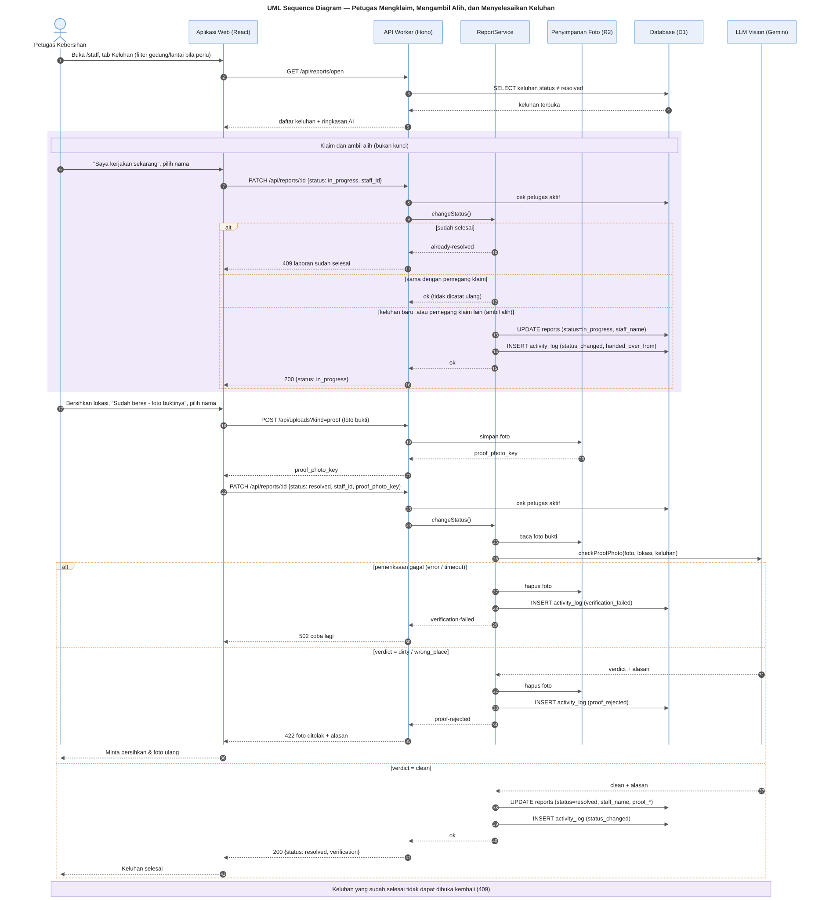
Gambar 15. Urutan kejadian saat petugas mengklaim, mengambil alih, lalu menyelesaikan keluhan dengan foto bukti.
| Langkah | Apa yang terjadi |
|---|---|
| 1–5 | Petugas membuka halaman petugas, tab Keluhan. Aplikasi meminta keluhan yang belum selesai; server mengambilnya dari basis data dan menampilkannya bersama ringkasan AI. Tidak perlu memilih nama atau lokasi lebih dulu. |
| 6–9 | Klaim. Petugas menekan “Saya kerjakan sekarang” dan memilih namanya. Aplikasi meminta status diubah menjadi in_progress dengan identitas petugas. Server memastikan petugas itu terdaftar dan aktif, lalu meneruskan ke ReportService. |
| 10–12 | Cabang “sudah selesai”: ditolak dengan kode 409; keluhan yang sudah selesai tidak dapat dibuka kembali. Cabang “sama dengan pemegang klaim”: tidak ada yang berubah dan tidak dicatat dua kali. |
| 13–16 | Cabang “keluhan baru atau pemegang klaim lain”: status dan nama petugas disimpan. Bila sebelumnya dipegang petugas lain, ini adalah ambil alih, dan log mencatat “X mengambil alih … dari Y”. Klaim bukan kunci, jadi tidak ada petugas yang bisa “mengunci” keluhan tanpa menyelesaikannya. |
| 17–21 | Petugas membersihkan lokasi, menekan “Sudah beres - foto buktinya”, memilih nama, lalu memotret. Foto bukti diunggah (jenis “proof”) dan disimpan; server membalas dengan kunci foto. |
| 22–26 | Aplikasi meminta status diubah menjadi resolved dengan kunci foto. ReportService membaca foto dan mengirimnya ke LLM Vision bersama lokasi dan keluhan asli, sehingga AI tahu apa yang harus diperiksa (misalnya: keluhannya genangan, apakah lantainya sudah kering dan apakah ini lokasi yang benar?). |
| 27–30 | Cabang “pemeriksaan gagal” (layanan AI error atau terlalu lama): foto dihapus, kejadian dicatat, petugas diminta mencoba lagi (kode 502). Petugas tidak perlu membersihkan ulang. |
| 31–36 | Cabang “kotor / salah tempat”: AI mengembalikan penilaian dan alasannya. Foto dihapus, penolakan dicatat, dan petugas melihat pesan seperti “Lokasi pada foto masih terlihat kotor. Bersihkan lagi, lalu foto ulang” (kode 422). |
| 37–42 | Cabang “bersih”: status menjadi resolved, beserta nama petugas, waktu selesai, dan data bukti. Perubahan dicatat di log, dan petugas melihat konfirmasi. Sejak saat itu foto bukti tampil di papan publik. |
Gambar berikut (halaman berikutnya, kertas A3 mendatar) memperlihatkan satu kiriman tugas harian, dari memilih lokasi sampai laporan tersimpan.
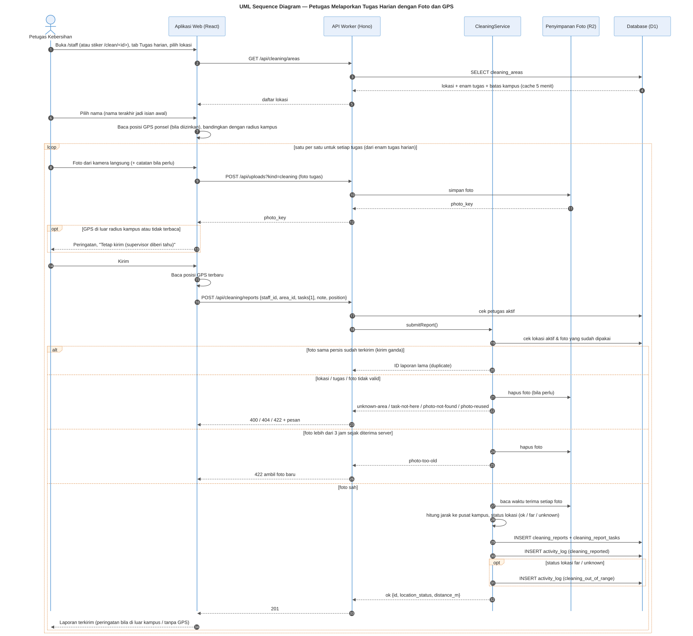
Gambar 16. Urutan kejadian saat petugas melaporkan satu tugas harian dengan foto dan posisi GPS.
Diagram ini menunjukkan satu pengulangan (loop): setiap tugas dari enam tugas harian difoto dan dikirim sendiri-sendiri. Bagian di dalam loop adalah satu kiriman.
| Langkah | Apa yang terjadi |
|---|---|
| 1–5 | Petugas membuka halaman petugas (atau stiker /clean/<kode>), tab Tugas harian, dan memilih lokasi. Aplikasi meminta daftar lokasi beserta enam tugas dan batas kampus ke server. |
| 6–7 | Petugas memilih namanya. Aplikasi membaca posisi GPS ponsel (bila diizinkan) dan membandingkannya dengan radius kampus. |
| 8–12 | Petugas memotret satu tugas dengan kamera langsung. Foto diunggah saat itu juga (jenis “cleaning”) dan server membalas dengan kunci foto. |
| 13 | Bila posisi di luar radius kampus atau tidak terbaca, petugas diperingatkan dan boleh memilih “Tetap kirim (supervisor diberi tahu)”. |
| 14–19 | Petugas menekan Kirim. Aplikasi membaca posisi GPS terbaru lalu mengirim laporan (satu tugas, catatan, posisi). Server memeriksa petugas aktif lalu meneruskan ke CleaningService, yang memeriksa lokasi aktif dan foto yang sudah dipakai. |
| 20 | Cabang “kiriman ganda”: foto yang sama persis sudah terkirim, jadi laporan lama dikembalikan. |
| 21–23 | Cabang “tidak valid”: lokasi tidak dikenal, tugas tidak berlaku di lokasi itu, foto tidak ditemukan, atau foto sudah dipakai. Dijawab dengan kode 400, 404, atau 422 beserta pesan. |
| 24–26 | Cabang “foto lebih dari 3 jam”: dihitung dari saat server menerima foto. Foto dihapus dan petugas diminta mengambil foto baru (kode 422). |
| 27–34 | Cabang “foto sah”: server membaca waktu terima foto, menghitung jarak ke pusat kampus, menentukan status lokasi, menyimpan laporan dan tugasnya, dan mencatat di log. Bila statusnya far atau unknown, dicatat tambahan sebagai “di luar kampus” supaya supervisor melihat peringatannya. Petugas menerima konfirmasi. |
Diagram berikut memperlihatkan proses yang sama dari sudut pandang siapa mengerjakan apa, dari awal sampai akhir. Setiap lajur adalah satu pelaku. Kotak biru adalah langkah manusia di lapangan (pelapor dan petugas), kotak ungu adalah langkah sistem dan AI, kotak oranye adalah langkah supervisor, bulatan merah adalah awal dan akhir, belah ketupat adalah percabangan, dan panah merah adalah jalur ketika syarat tidak terpenuhi.
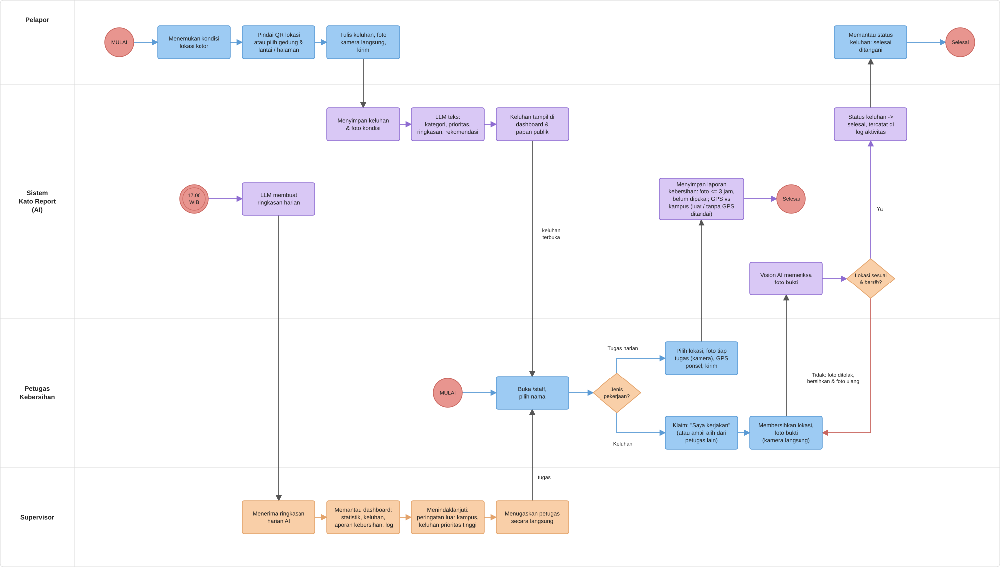
Gambar 17. BPMN proses Kato Report: keluhan, tugas harian, dan pemantauan supervisor.
Semua diagram menceritakan sistem yang sama dari sudut berbeda. Tabel berikut menunjukkan di mana satu kegiatan muncul di setiap diagram, sehingga pembaca bisa berpindah dari satu diagram ke diagram lain.
| Kegiatan | Use Case | DFD | Class | Sequence / BPMN |
|---|---|---|---|---|
| Mengirim keluhan | Kirim Keluhan | Proses 2.0 (2.1–2.3) | Report, CleaningArea, User | Gambar 14 langkah 1–19; BPMN lajur Pelapor |
| Analisis AI keluhan | Analisis Keluhan (AI) | Proses 3.0 (3.2–3.4) | Report (atribut AI), AiStatus | Gambar 14 langkah 20–27 |
| Klaim dan ambil alih | Klaim Keluhan, Ambil Alih Keluhan | Proses 4.2 | Report (status, staffName), ReportStatus | Gambar 15 langkah 6–16 |
| Menyelesaikan keluhan | Selesaikan dg Foto Bukti + Verifikasi Foto Bukti | Proses 4.0 (4.3–4.5) | Report (atribut proof), ProofVerdict | Gambar 15 langkah 17–42; BPMN |
| Tugas harian | Laporkan Tugas Harian + Periksa Posisi GPS | Proses 5.0 | CleaningReport, CleaningReportTask, LocationStatus | Gambar 16; BPMN |
| Ringkasan harian | Buat / Buat Ulang Ringkasan | Proses 6.0 | DailySummary | BPMN (jam 17.00) |
| Papan publik dan peringkat | Lihat Papan Publik, Papan Peringkat | Proses 7.0 | (membaca Report, CleaningReport, User) | — |
| Kato Bot | Tanya Kato Bot | Proses 9.0 | (membaca Report, DailySummary) | — |
| Pemantauan supervisor | Pantau Dashboard, Lihat Laporan, Hapus Keluhan, Cetak Stiker QR | Proses 8.0 | Report, CleaningReport, CleaningAssignment | BPMN lajur Supervisor |
| Jejak audit | Lihat Log Aktivitas | D7, proses 8.4 | ActivityLog | Setiap “INSERT activity_log” |
canResolve(), Gambar 15). Kerja harian dibuktikan dengan foto langsung, waktu server, dan GPS (Proses 5.0, Gambar 16).| Istilah | Arti sederhana |
|---|---|
| Aktor / Entitas eksternal | Pihak di luar sistem yang memakai atau berhubungan dengan sistem. |
| AI / Kecerdasan buatan | Program komputer yang bisa “memahami” teks atau gambar dan memberi penilaian. |
| Ambil alih | Petugas lain mengambil keluhan yang sedang dikerjakan seseorang dan belum selesai dengan foto bukti. Klaim bukan kunci. |
| Area kebersihan (lokasi) | Tempat yang dilaporkan atau dibersihkan: lantai gedung, halaman, gedung utuh, atau tempat di luar gedung. |
| Asinkron | Dikerjakan di belakang layar tanpa membuat pengguna menunggu. |
| Balancing | Aturan DFD: aliran data di level rinci harus sama dengan di level induknya. |
| Basis data (database) | Tempat penyimpanan data yang terstruktur, seperti lemari arsip digital. |
| BPMN | Business Process Model and Notation: bagan alur kerja berlajur per pelaku. |
| Cache | Salinan sementara data yang sering dibaca, disimpan sebentar di memori supaya halaman cepat tampil. |
| Cookie / Sesi | “Tiket masuk” kecil yang disimpan peramban (browser) supaya pengguna tidak perlu login berulang kali. |
| Cron / Penjadwal | Pengatur waktu yang menjalankan tugas otomatis pada jam tertentu. |
| Dashboard | Halaman ringkasan untuk memantau keadaan, berisi daftar, angka, dan grafik. |
| Data lama | Tabel dan catatan sebelum migrasi 0011 (toilets, buildings, work_logs) yang masih disimpan tetapi tidak diisi lagi. |
| Data store | Tempat data disimpan (di DFD digambar sebagai kotak terbuka di sisi kanan). |
| GPS | Posisi ponsel (lintang, bujur) yang dibandingkan dengan pusat dan radius kampus. |
| Hash | Pengacakan satu arah. Kata sandi diubah menjadi kode yang tidak bisa dikembalikan ke aslinya. |
| Kato Bot | Asisten AI tanya-data berbentuk ikon melayang di setiap halaman. |
| Klaim | Petugas menyatakan sedang mengerjakan sebuah keluhan (“Saya kerjakan sekarang”); status menjadi in_progress. |
| Kunci foto (photo key) | Nama unik berkas foto di penyimpanan, dipakai untuk merujuk foto itu. |
| LLM | Large Language Model: jenis AI yang memahami dan menghasilkan bahasa. |
| Log | Catatan kejadian berurutan waktu. |
| Prompt | Instruksi dan bahan yang dikirim ke AI. |
| QR code | Kotak berpola yang bisa dipindai kamera ponsel untuk membuka halaman tertentu. |
| Query agregat | Perintah untuk menghitung rekap data (jumlah, rata-rata) tanpa menampilkan data satu per satu. |
| R2 bucket | Layanan penyimpanan berkas milik Cloudflare, tempat foto disimpan. |
| Server | Komputer di internet yang menjalankan aplikasi dan melayani permintaan dari ponsel pengguna. |
| Swimlane (lajur renang) | Pembagian diagram proses menjadi lajur per pelaku. |
| Tugas harian | Enam pekerjaan tetap per lokasi: menyapu & mengepel, mengelap kaca, membersihkan toilet, membuang sampah, mengisi galon, merapikan ruangan. |
| UML | Unified Modeling Language: bahasa gambar standar untuk merancang perangkat lunak. |
| Verdict | Putusan atau penilaian AI atas foto bukti: bersih (clean), masih kotor (dirty), atau bukan lokasi yang dilaporkan (wrong_place). |
| WIB | Waktu Indonesia Barat; semua jam di sistem memakai zona waktu ini. |
docs/diagram/src/: DFD dan BPMN sebagai
skrip Python (dfd.py, bpmn.py), diagram class dan sequence dalam format Mermaid (.mmd), dan
use case sebagai skrip Python. Gambar siap pakai (PNG dan SVG) ada di docs/diagram/ dan docs/bpmn/.